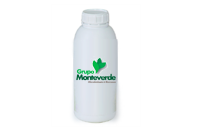

BIORAQUIS

Es un degradador, acelerador de procesos de degradación de biomasas orgánicas, tanto de origen animal (excretas, ruminazas), vegetal (residuos, subproductos) y agroindustriales
Contiene 5 grupos funcionales edáficos, dentro de las que se encuentran Bacterias Ligninolíticas, Proteolíticas, Celulolíticas, Fijadoras de Nitrógeno y Fosforo, Hongos Ligninolíticos y Celulolíticos, Actinomycetos y Levaduras, todos ellos siendo importantes y benéficos en la transformación de compuestos orgánicos, haciéndolos disponibles y asimilables para las plantas
Beneficios
- Bioestimulante, biodegradador, el cual promueve la fermentación aeróbica de los compuestos orgánicos
- Evita que se liberen gases generadores de olores molestos como Amoniaco (NH3), Acido Sulfhídrico (H2S) y mercaptanos
- Agiliza los procesos de degradación de materia orgánica
- Incrementa la eficiencia de la materia orgánica como fertilizante, ya que durante el proceso de fermentación se liberan y sintetizan sustancias y compuestos como: aminoácidos, enzimas, vitaminas, sustancias bioactivas, hormonas y minerales solubles, que al ser incorporados al suelo a través del abono orgánico, mejoran sus características físicas, químicas y microbiológicas
- Reduce tiempos de proceso en Compostaje y Lombricultura
- Mejora las características finales de Compost y Humus
- Limita la proliferación de insectos vectores como las moscas
- Mejora la fase termofílica eliminando microorganismos patógenos mejorando la sanidad del suelo de los cultivos y compostajes
- Reduce la producción de lodos en sistemas de tratamiento convencionales
- Posee un efecto acumulativo en suelos, por su riqueza y diversidad microbiana